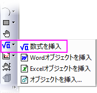
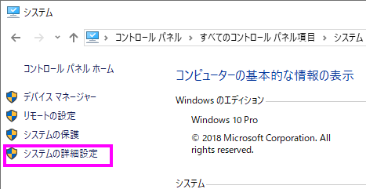
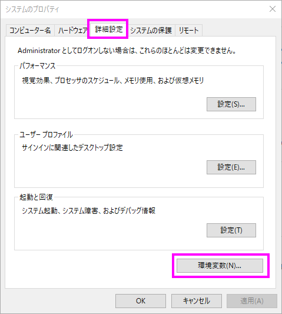
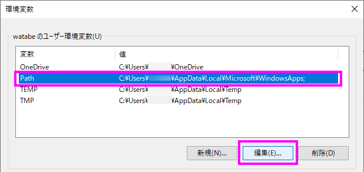
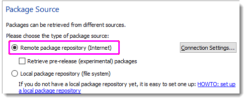

FAQ-982 LaTexアプリを使おうとするとエラーが出ます。どうしたらよいでしょうか？
LaTeX-APP-Error-Troubleshoot
最終更新日：2023/3/29
 |
Origin 2023bからSVGベースのLaTeX数式ツールを使用できます。この新機能のLaTeX数式を挿入ツールは、手動でのライブラリやソフトウェアのインストールは不要です。LaTeX
Appでの問題を解決するには、Originバージョンを2023b以降にアップグレードしたうえで、新しいLaTeX数式を挿入ツールの使用が推奨です。詳細についてはこのドキュメントを参照してください。
 |
LaTeXアプリの使用を続け、LaTeX文字を挿入しようとすると次のエラーメッセージが表示される場合
OriginはMiKTeXパッケージの更新に失敗しました。インターネットにアクセスできることを確認してください。問題が解決しない場合は、@
LTXTP（units sec）を使用してタイムアウト値を増やしてみてください。:
次の回避策を試してください。
方法1：@LTXTPを使用してタイムアウト値を増やします
環境設定：システム変数： システム変数を設定ダイアログを開きます。[変数]列にLTXTP 'を入力し（
"@"を前に付けない）、その値を600または1000、さらに大きい値に設定します。Originがそれを検出できなかった場合、これは再試行ボタンをクリックしたときにサーバに接続してMiKTeXパッケージをダウンロードするためのタイムアウトを増加させます。
方法2：手動で
'url'パッケージをインストールする
- MiKTeXインストールフォルダを見つけます。64ビットWindows OSの場合、デフォルトのパスはC：¥Program
Files¥MiKTeX 2.9¥miktex¥bin¥x64¥です。
- コマンドプロンプトウィンドウを開き、MiKTeXインストールフォルダへのパスを指定します。実行する
mpm --install=url
「パッケージのURLが正しくインストールされています」というメッセージが表示されます。
- Originのユーザファイルフォルダを開き、OLaTex.iniがあれば削除してください。
方法3：複数のTexパッケージをインストールした場合は、 'url'パッケージを手動でインストールしてください。
複数のTeXパッケージがインストールされているとLaTexアプリは失敗します。
たとえば、CTexとMiKTeXの両方をインストールした場合は、以下の手順に従って解決することができます。
- マイコンピュータを右クリックして、プロパティメニューを選択します。開いたダイアログで、システムの詳細設定リンクをクリックします。
- 
- システムのプロパティダイアログで、詳細設定タブに移動して環境変数ボタンをクリックします。
- 
- 上部のボックスからパスを選択して編集ボタンをクリックします。「C：\ CTEX \ MiKTeX
\ miktex \ bin;」を見つけてください。それを削除します（他のソフトウェアの場合は、対応するインストールパスを見つけます）。したがって、思い出させたMiKTeXパスはOriginへの正しいリンクとして機能します。
- 
- MiKTeXコンソールを右クリックして管理者として実行します。左側のパネルでパッケージを選択して、変更ボタンをクリックします。

- [パッケージソース]ダイアログで、リモートパッケージリポジトリ（インターネット）を選択して次へをクリックします。
- 
- リモートパッケージリポジトリの最後の部分でCountry：US、Host：ctan.mirrors.hoobly.comを選択します。

- 完了をクリックします。
方法4：「すべてのユーザー」の代わりに「このユーザーのみ」としてMiKTeXをインストールする
- MiKTeXコンソールを右クリックして管理者として実行します。左側のパネルでパッケージを選択して、変更ボタンをクリックします。
- このダイアログで、リモートパッケージリポジトリ（インターネット）を選択して次へをクリックします。
- リモートパッケージリポジトリで、Country：US、Host：ctan.mirrors.hoobly.comを選択します。
- 完了をクリックします。
- 管理者としてコマンドプロンプトウィンドウを開きます。C：\ Program Files \ MiKTeX \ miktex
\ bin \ x64 \のように、MiKTeXインストールフォルダのパスに直接移動します。
- 実行する
mpm --install=zhmetrics
mpm --install=url
キーワード:LaTex,
MiKTeX, timeout